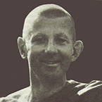

|
RESPONDING TO PAIN  |
Venerable Khemadhammo (Alan Adams) was born in Portsmouth, England
in 1944, and trained at drama school to become an actor. In his seven-year
acting career he travelled worldwide (including a 14,000-mile tour of
the U.S.) and spent three years with the National Theatre Company. Becoming
interested in Buddhism, he eventually decided to go to Thailand to become
a bhikkhu. |
|
This article was prepared by Venerable Khemadhammo at the request of
'Caduceus' magazine and appeared PAIN AND SUFFERING ARE ONLY TOO WELL KNOWN to require much of an introduction. Suffering describes the experience of varying degrees of discomfort, and pain is the alarm which forces us to attend to that discomfort. Neither the experience nor the alarm are pleasant and, naturally, we would all prefer a world in which neither existed. The search for perfect health, or for a system whereby perfect health might be attained, is a response to this wish for a more satisfactory state of affairs. Let us think of a house in which many important and valuable objects are kept and which is equipped with the very latest electronic alarm system. While all is left undisturbed the system remains quiet. There may be the minor irritation of having to check and maintain it and it may occasionally raise a false alarm, but essentially it is silent and of no trouble to the owner. Then suddenly, quite unexpectedly, after months or years of inactivity, one is wrenched from one's slumber by the searing pain of bells, sirens and flashing lights and one knows that something is wrong -- one's treasure is being plundered. How do you respond to that? Some people turn over and go back to sleep; some reach for the bottle, and drug themselves into oblivion; some panic; and some quietly set about dealing with the intrusion. The last is the proper response to pain. Now there are two basic approaches: you can fight to get your valuables back, the intruder captured and removed, the status quo restored and the alarm reset; or you can try to accept and understand what has happened. If you only do the former, the best you can achieve is simply to get back to where you started, but with less security. Despite your efforts, your attachments have been threatened and it could happen again -- you've not only gained nothing, but you're losing ground. Conversely, if you choose the latter response, you're bound to benefit. You may not restore your possessions, but you will be encouraging a healthy attitude which, if fully developed, will mean that never again can alarm bells spoil your repose. Tempting, isn't it? My Buddhist monastic training, which has included detailed contemplation of the body, has led me to have little sympathy with health regimes, special diets and the like, and in the past I've occasionally enjoyed tweaking a few attachments with dietary advice based on plenty of jam doughnuts. The Buddha has pointed out that it is sheer foolishness to claim that one's body is healthy even for a moment -- in this ever-changing phenomenon, there is always something not quite right. Nevertheless, you will find that the Buddha is referred to as the 'peerless physician', whose concern is the cure of all greed, hatred, and delusion -- the ending of real suffering. That analogy is frequently played on and extended. At the opening ceremony of The Forest Hermitage, one of our most senior monks took it up again and compared this place to a small hospital, with myself as the house surgeon. What I am saying, then, is that there is health and Health: the former has its place, but in the long run is futile; while the latter must surely become the purpose of living. Of course, by all means take care of your body, but reflect that whatever you do it may still be easily broken and one day it is sure to die. Of the two, a healthy mind is of much more use than a healthy body. If you're in wondrous physical shape, but your mind is disordered, you're in bad trouble. But if your body is wasted, eaten up with disease or otherwise beyond repair, and your mind is bright with wisdom, you'll be all right. Let's go back to the analogy of the house: to sit in your house, jealously guarding its contents, polishing and improving the alarm system, equates with the ordinary health of the special diets and fitness regimes; to understand, to develop a healthy attitude, is real Health. Real Health is worthy of us. It comes through facing up to life, including pain and suffering, observing it, investigating it and comprehending its nature and its source. I think it's often obvious that those who've suffered have grown; but we must be careful, as it's not necessarily the case. It's not pain alone that generates the growth, it's how you view and use your experience. You must have the proper response -- then and only then, will wisdom emerge out of suffering. I remember being told once by an experienced burglar that he enjoyed the challenge of an elaborate alarm system; and I suspect he might also have said that where there was an alarm, he knew there was something worth having -- and the more complex the alarm, the more valuable and desirable were the things to steal. Think about it: if you haven't got anything or if you have no attachment to things surrounding you, you don't need any protection. If they're there, fine; if they're not there, fine! And you sit undisturbed, content with things as they are. A healthy attitude, then, is found in a mind that has matured and grown out of desire and attachment -- the mind is cool and there are no more alarms to ring. In other words, there is no more pain and suffering. The Buddha referred to twelve kinds of suffering, which may be reduced to three, and ultimately to one. The twelve are: birth, decay, death, sorrow, lamentation, pain, grief, despair, association with the unpleasant, separation from the beloved, not to get what one desires, and the Five Aggregates. Reduced to three, there are: the ordinary suffering of aches and pains, the suffering dependent on impermanence, and the discomfort of attachment to the Five Aggregates. Reduced to one, it is conditioned existence or just the Five Aggregates that is suffering. Most of this is quite obvious, but perhaps I'd better enlarge on these mysterious Five Aggregates, which is how Buddhism analyses a person. They are: Form, Feeling, Perception, Habitual Tendencies, and Consciousness, none of which are stable, lasting or possessed of any inherent self-hood. We sometimes refer to them as a psycho-physical process. Form obviously corresponds to the body: it is just matter, numerous particles vibrating together, in the process of becoming and breaking up, but without any ability to know an object. The remaining four -- feeling, perception, habitual tendencies and consciousness -- correspond to mind, and are capable of knowing an object. These Five Aggregates are all dependent on other things, and exist in interdependence with each other; as a human being, you don't have one without the others. Together they create a formation -- a formation, which, like that of geese or aircraft in the sky, is continually in a state of forming as the components interact and respond to conditions. Thus mind affects body and body affects mind. This formation arise dependent on conditions, it grows or develops according to conditions and persists where the conditions persist. For example, sight-consciousness or seeing and the pleasure or pain, perception and other mental factors that accompany a consciousness, depend on there being an object to be seen, eyes and a contact between the two. You don't see without eyes, you don't see what's behind you and you can't see anything if there's nothing to be seen. If you develop awareness and the meditation that produces insight, you will see that your world, the entire range of your experience, is just the Five Aggregates; and that suffering depends on your attachment to them -- an unhealthy attitude. Our experiential world is a complex play of these aggregates: consciousness, resting on its physical base, arise where there is an object, and is always accompanied by feeling (liking, disliking or indifference), and perception (recognising and marking the object), as well as a variety of other habitual tendencies that colour the experience. This all happens so quickly that an illusion, analogous to that produced when still pictures or sound vibrations are run at a certain speed, results. This is the illusion of self. To be aware, you will need to slow down and watch yourself carefully; then as you go on you will perceive that the phenomena that flow unceasingly before you have no intrinsic substance, are constantly on the move, and that to try to attach, grasp or reject them is bound to be frustrating. Watching the procession of thoughts, feelings and other experiences, self begins to drop out of the picture and attachment to self is correspondingly reduced. There is a shift in attitude and a disengagement. You are beginning to see things in their true nature. This insight accumulates and this is how wisdom is established. Understanding the way things are, there is contentment; you neither want them to be otherwise nor are you attached -- thus, a healthy attitude. In his first sermon, the Buddha spoke of Four Noble Truths which he had to understand fully, work with and realize before his attainment of enlightenment was complete. They are: suffering; craving, the origin of suffering; the end of suffering; and the way to realise the end of suffering. Buddhist therapy is essentially a response to suffering and the complete method includes morality, mental training and wisdom. For us, meditation is the principal exercise in mental training, and means the process of calming and clarifying the mind. If you can imagine a precious jewel at the bottom of a lake: when the waters are turbulent, whipped up by the violence of the storm and the confusing patterns of the wind, there's no chance of your being able to look over the side of your boat and admire the brilliance of that jewel. The water's stained with mud and sand, frothing and tipping your boat this way and that, and the jewel is totally obscured. But when the storm is over and the waters have become calm, and the mud and sand has settled, then without difficulty you may pull across the lake and looking over the side, be dazzled by the luminous intensity that now shines forth unobstructed. In the same way, the confused and turbulent mind obscures one's inherent wisdom. Of course, working with the mind is not quite as simple as the analogy of the jewel in the lake. After all, the absence of wisdom encourages the turbulent mind and we cannot afford to sit back and wait for nature to take its course and the mind to quieten of itself. But, nevertheless, the training is composed of concentration and insight, or calm and clear, which working together support each other. At the Forest Hermitage the general advice that I give is to calm the mind by concentrating on loving-kindness; followed by the practice of vipassana, or insight meditation, which is developed through the cultivation of mindfulness. When sitting in meditation, you will experience pain. It may be pins and needles or aching knees, or it may be an unpleasant thought or memory. The way you use it depends on whether it is concentration or insight that you are emphasising in your practice. In both cases the pain is recognised, but when simply trying to concentrate and calm your mind your duty is to avoid dwelling on that pain, by returning to your meditation subject with greater and more intense concentration. Using the loving-kindness practice, it may be helpful to view the pain with loving-kindness; this softens your attitude to the pain and brings you back to your meditation subject. Your use of the pain in the concentration practice is simply as a resistance. You will appreciate that working against resistances brings energy and sharpens your attitude to whatever you are doing. Please be quite clear that this is not a case of repression -- you do not try to deny your pain nor even get rid of it -- you simply concentrate with greater intensity on your meditation subject, spurred on by the resistance that your pain has set up. When developing insight, however, you use your pain by being mindful of it and watching it. The insight practice is essentially one in which a concentrated awareness is developed, with each and every experience being subject to a bare knowing. There are various techniques which help this process and it is best to familiarise yourself with such a practice, if it interests you, under proper guidance. As soon as pain is seen in this way it loses its power. Sometimes it disappears altogether, but if not, as soon as you start relating to it as just feeling, only sensations, you relax and the discomfort reduces. You then start to examine it and you will find out that it's not PAIN, not a static thing, but rather a shifting, ever-moving succession of experiences that flow into and out of each other. You are now on the way to realising insight. As you work with pain in this way, so you cope with it better and you learn from it. Your pain can teach you a great deal: you will see that it is never still for an instant, that you contribute to it through your fear and dislike of it, that you even attach to it, and that lurking behind it is that ignorant mind that always wants things to be other than they are -- the unhealthy attitude. Suddenly such awfulness is being turned to your advantage and you're winning. This is the wonderful thing about insight practice; it uses everything, brings everything alive and turns everything to advantage. Whatever arises, it is your duty to observe it with bare attention. Not doing anything with it, not giving in to the mind of desire and wishing it were otherwise, but content with things as they are, mindful and watchful. In daily life too, be mindful, watchful and content. Things are as they are, they can't be otherwise. They might have been, but they're not. They are as they are. In the future it might all be different, but right now it's as it is and it's wonderful. The present is all we really have and here we will find wisdom. So give up that gaining mind, rest content, be mindful, and understanding the true nature of things, be possessed of a healthy attitude. Let go and be happy. |
| Home Page |